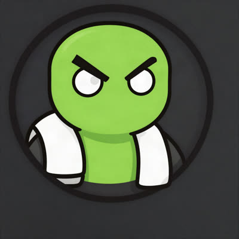
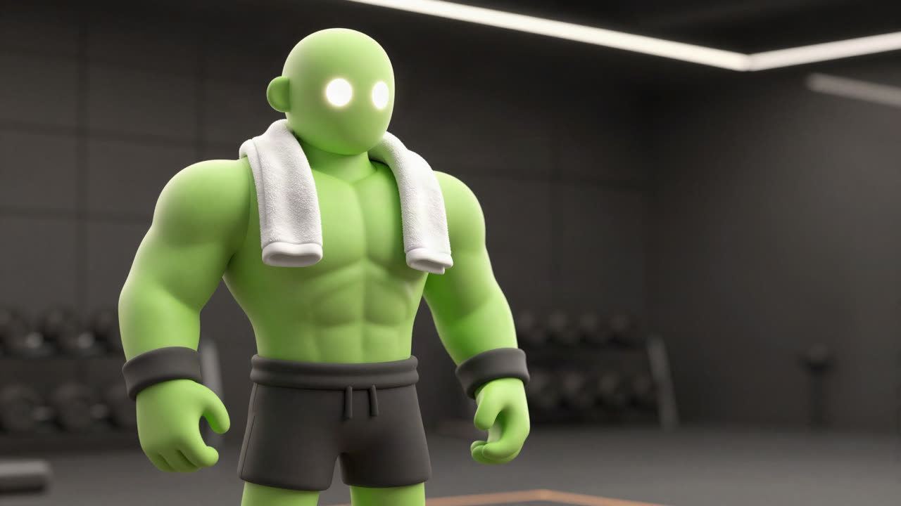
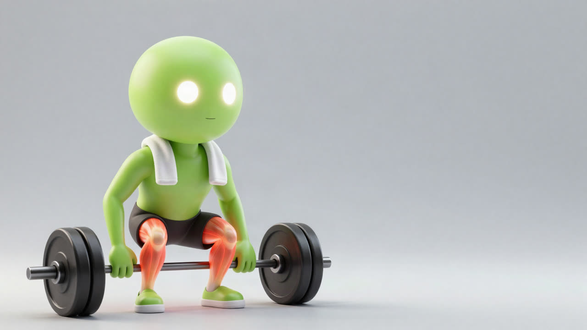
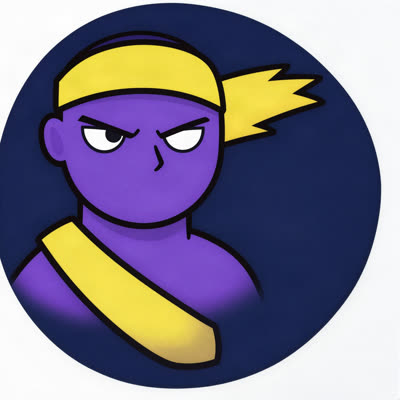
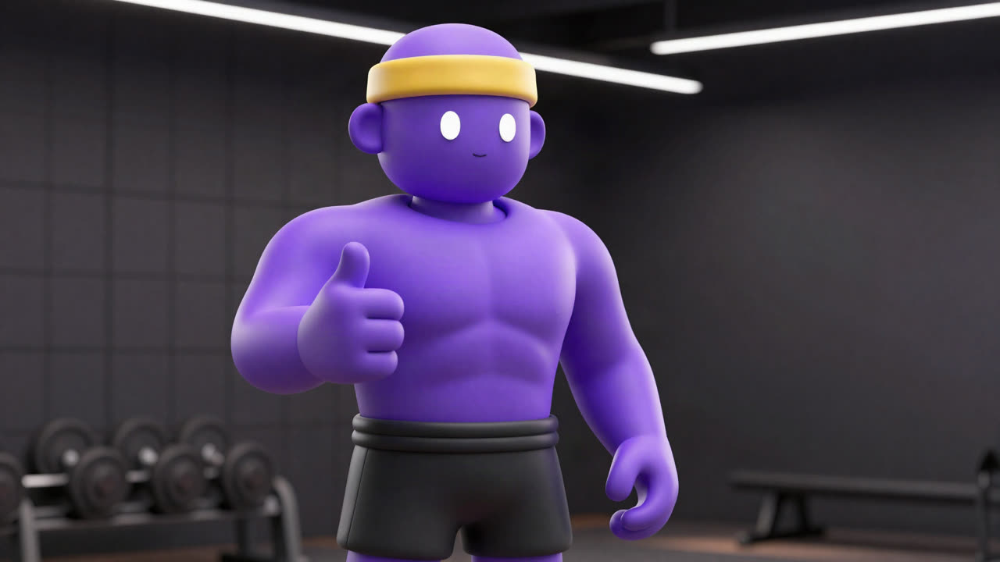
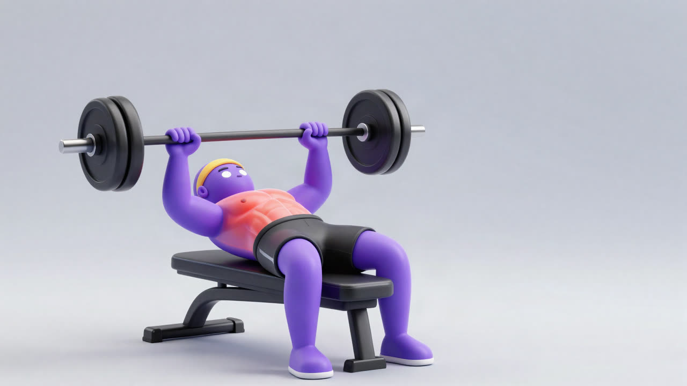
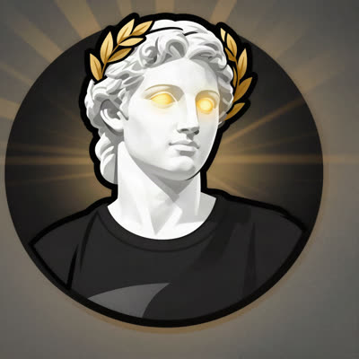
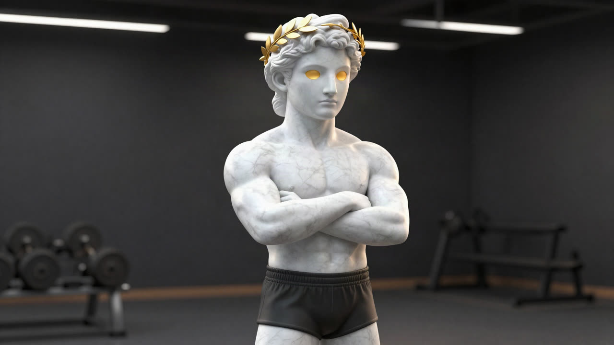
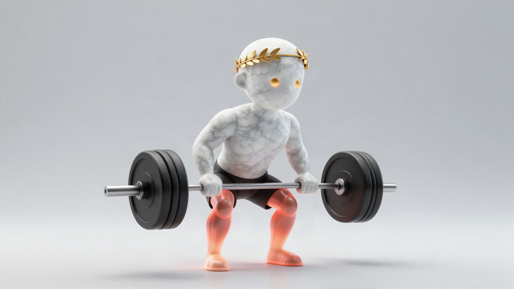

Tres personajes posibles, cada uno con su nombre de canal, su página de YouTube simulada y el mismo personaje en los tres entornos del formato: gimnasio oscuro para hablar a cámara, estudio gris con cuadrícula para explicar ejercicios y fondo azul claro para los Reels.
Son bocetos de idea, no el render final. Se hicieron con el modelo básico de Higgsfield (plan gratis), así que el personaje cambia un poco entre imágenes y las proporciones salen a veces de juguete. En producción usaríamos un único modelo 3D en Blender, siempre igual, con los músculos coloreados por zonas. Los títulos de miniaturas y Reels están puestos encima con texto real.

Suscribirse


Suscribirse


Suscribirse

Como en tu referencia: el personaje no tiene boca dibujada. Cuando habla, se le mueve un poco la mandíbula y la cara se estira, y en los silencios se queda quieta. Ya tenemos la pieza: mouth.json (de tools/mouth_env.py) da la apertura cada 10 ms según la voz real. En vez de abrir una boca, moverá la mandíbula del modelo 3D.